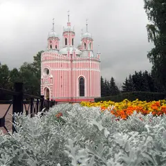

У метро · Юг
Куда сходить у метро «Московская»
Для 5 мест из нашего каталога ближайшая станция — «Московская» (Юг): 2 ресторана или кафе, 1 кофейня, 1 развлечение и 1 место для прогулки. Например, «Чесменская церковь», «Боулинг Типанова» и «Пышки на Ленсовета». Недорогих, примерно до 1 500 ₽ на человека, — 3. 3 готовых плана проходят через эту станцию — например, «Чесменская церковь и боулинг», с маршрутом пешком между точками.
- 5 мест
- 3 плана
Места у метро «Московская» 5

ул. Ленсовета, 12
Новое
Красная церковь Фельтена с белым каменным кружевом, зубцами и пятью башенками со шпилями — будто вырезана из картона. Красивее всего на закате и в снег.
Подробнее и маршрут: Чесменская церковьПозвать сюда: Чесменская церковь
Фото: Туманова Татьяна, CC BY-SA 3.0 · Wikimedia Commons
ул. Типанова, 21
Новое
Районный боулинг на юге города, в пятницу и субботу работает до утра. Подходит для игры с друзьями.
Подробнее и маршрут: Боулинг ТипановаПозвать сюда: Боулинг Типанова
ул. Ленсовета, 30
Новое
Пышечная в Московском районе. Сладкий перекус для тех, кто гуляет в этой части города.
Подробнее и маршрут: Пышки на ЛенсоветаПозвать сюда: Пышки на Ленсовета
площадь Конституции, 3к2
Ресторан на 41-м этаже небоскрёба на юге города — самый высокий в Петербурге, город как на ладони.
ул. Гастелло, 7
Кофейня с книжными полками в Московском районе: дегустации зерна от разных обжарщиков и тихая обстановка для долгого разговора.
Готовые планы 3
- Чесменская церковь · Неоготическая церковь · м. Московская
- 11 минут пешкомБоулинг Типанова · Боулинг
Посмотреть на красно-белую неоготическую церковь, потом минут восемь пешком и сыграть пару партий в боулинг.
Открыть план: Чесменская церковь и боулингПозвать сюда: Чесменская церковь и боулинг
Фото: Туманова Татьяна, CC BY-SA 3.0 · Wikimedia Commons
- Боулинг Типанова · Боулинг · м. Московская
В пятницу и субботу дорожки работают до шести утра, удобно собраться компанией после работы и не спешить.
Открыть план: Боулинг до утра на югеПозвать сюда: Боулинг до утра на юге
- Этаж 41 · Ресторан · м. Московская
Самый высокий ресторан Петербурга: город лежит под окнами, и огни включаются один за другим, пока вы ужинаете.
Открыть план: Ужин на 41-м этажеПозвать сюда: Ужин на 41-м этаже
Как позвать
- Выбери план, место или событие — в карточке адрес, цены и маршрут в Яндекс Картах.
- Нажми «Позвать сюда» — соберётся приглашение-игра для свидания или голосование для компании.
- Отправь ссылку в любой мессенджер: тебе ответят, а компания отметит, куда и когда может. Бесплатно и без регистрации.